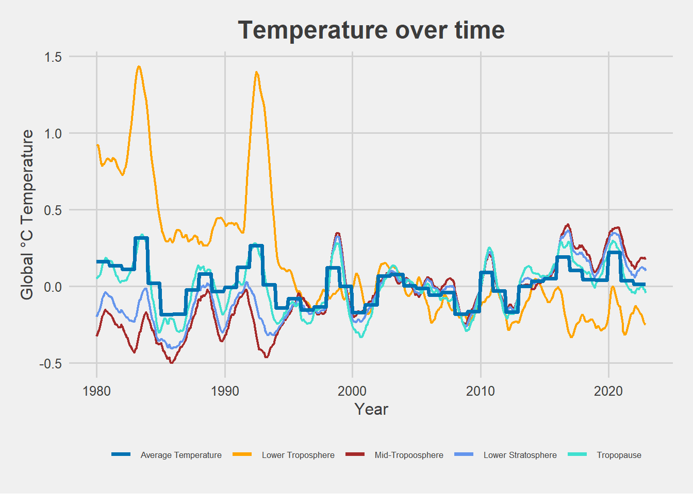

rm (list = ls())
library(readr)
library(zoo)
library(tidyverse)
library(lubridate)
library(ggthemes)Assignment 1
Assignment 1 - reading static web pages
On the web page: https://www.drroyspencer.com/latest-global-temperatures/
We find a figure of the latest global temperature (data at the bottom of page):
Download the four data series, i.e., temperature measurements at the four different locations in the atmosphere; the Lower-Troposphere, Mid-Troposphere, Tropopause, and Lower-Stratosphere. Each dataset is found using its unique URL.
Use only the Global temperature from each dataset (i.e., the third data column).
# Making a date variable of year and month
dflow <- dflow %>%
select(Year, Mo, Globe) %>%
mutate(Date = ymd(paste(dflow$Year, dflow$Mo, 1, sep="-"))) %>%
mutate(Year = year(Date), Month = month(Date)) %>%
# making chr variables numeric
mutate_if(is.character, ~as.numeric(.)) %>%
# renaming Globe to lower_t
rename(lower_t = Globe) %>%
#removing a variable
select(-Mo)
# Making numeric, selecting global and renaming
dfmid <- dfmid %>%
select(Globe) %>%
mutate_if(is.character, ~as.numeric(.)) %>%
rename(mid_t = Globe)
dftropo <- dftropo %>%
select(Globe) %>%
mutate_if(is.character, ~as.numeric(.)) %>%
rename(tropo = Globe)
dfstrato <- dfstrato %>%
select(Globe) %>%
mutate_if(is.character, ~as.numeric(.)) %>%
rename(lower_s = Globe)
# Combining all the temperatures to one dataset
df <-cbind(dflow, dfmid, dfstrato, dftropo) %>%
unique()For each of the four locations in the atmosphere, calculate the 12-month(right-aligned) moving average (or mean) (you can run ?zoo::rollmean in the R console to understand what the right-aligned average means) using all the available data points. Also, calculate a new variable called Average, which is the average of the four 12-month moving averages.
# Mean of each sphere
df <-df %>%
mutate(lower_t_mean = rollmean(lower_t, 12, fill=NA, align="right")
,mid_t_mean = rollmean(mid_t, 12, fill=NA, align="right")
,tropo_mean = rollmean(tropo, 12, fill=NA, align="right")
,lower_s_mean = rollmean(lower_s, 12, fill=NA, align="right"))# Pivoting longer
df_long <- df %>%
pivot_longer(cols = c(lower_t_mean, mid_t_mean, tropo_mean, lower_s_mean),
names_to = "Location",
values_to = "values")Make a plot of the four-atmosphere locations and their Average in the same plot. Note, the original data points are not to be used in the plot. Include labels identifying the location of the temperature measurements, and the Average. In the plot, you should only use data from January 1980 and onwards
Add an appropriate main title and labels to the axis of the plot. Modify and use the R code we have been utilizing in class and submit your R code in Canvas. The R code should replicate your plot when it is executed (run) from top to bottom.
# Plotting figure
df_long %>% filter(Year >= 1980) %>%
group_by(Year) %>%
mutate(average_temp=mean(values)) %>%
ggplot(aes(x=Date, y=values, color=Location))+
geom_line(linewidth=0.8) +
geom_line(aes(x=Date, y=average_temp,col="#0072B2"),linewidth=1.4)+
theme_fivethirtyeight()+
labs(title="Temperature over time", x="Year",y="Global °C Temperature")+
theme(legend.text= element_text(size=6.5),
axis.title= element_text(),
plot.title=element_text(hjust = 0.5))+
scale_color_manual(name="", values=c("#0072B2"
,"orange"
,"brown",
"cornflowerblue",
"turquoise"),
labels=c("Average Temperature","Lower Troposphere",
"Mid-Tropoosphere","Lower Stratosphere","Tropopause"))